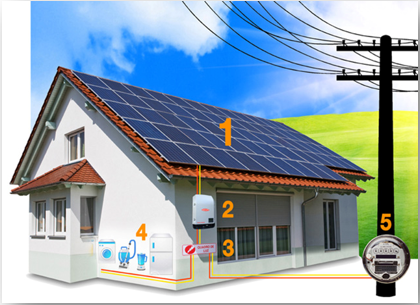
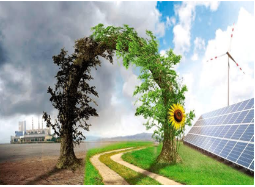
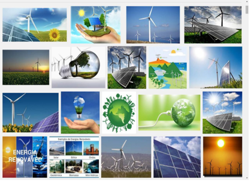

Para que seja possível entendermos mais sobre o tema principal do projeto, devemos compreender o que de fato é sustentabilidade. A sustentabilidade é a capacidade de sustentação ou conservação de um processo ou sistema e aborda a maneira como se deve agir em relação à natureza. De acordo com Lana Magalhães, o desenvolvimento sustentável tem como objetivo preservar o planeta e atender as necessidades humanas, onde um recurso natural explorado de modo sustentável durará para sempre. Sendo essa preocupação a única forma de garantir um mundo habitável às próximas gerações, com a preservação dos recursos de que elas também vão precisar. Sendo assim, iremos abordar a sustentabilidade de forma ambiental, sobre os recursos naturais do planeta e a forma como são utilizados pela sociedade, comunidades ou empresas dentro do território nacional.
"As pessoas estão cada vez mais propensas a um estilo de vida sustentável. Por isso, buscam por produtos ecológicos, diminuem o consumo para gerar menos lixo ou procuram fontes alternativas de energia." Energilux (2018). A natureza fornece inúmeras fontes renováveis e limpas, isso significa que essas fontes de energia não geram contaminações quando usadas e que são inesgotáveis. Felizmente essas fontes de energia estão sendo cada vez mais aprimorado e incentivado entre os consumidores comuns.

No Brasil, as fontes renováveis representam 40% da matriz energética, porém nosso país oferece mais alternativas de recursos renováveis do que a quantidade que exploramos que é muito menor do que deveria ser. É possível encontrar dados sobre a permissão ao acesso de micro geração e mini geração (Os imóveis que adotam energias alternativas são conhecidos como mini/micro geradores de energia) distribuída aos sistemas de distribuição de energia elétrica nacionais na Resolução 482/2012 da ANEEL, documento que oficializa as medidas para instalação e uso de energia sustentável. Desta forma, todo consumidor ativamente cadastrado no Ministério da Fazenda, por um CPF ou um CNPJ, tem concessão para conectar um sistema gerador de energia elétrica próprio, oriundo de fontes renováveis, paralelamente às redes de distribuição das concessionárias. Por meio desta, é possível instalar aparelhos alternativos de energia e aproveitar a potência gerada para ganhar descontos na conta de luz, podendo acumular créditos energéticos, caso sua produção supere o consumo da sua casa.
O Brasil e a maioria dos países utilizam combustível fóssil como energia. Porém, além de estes recursos se esgotarem um dia, são muito prejudiciais ao meio ambiente. No Brasil, ao contrário de alguns países que não possui tanta fonte natural ou condição para expandir a implantação do uso de energias renováveis, temos uma abundância das principais fontes sustentáveis de energia, como a solar, eólica, rios e correntes para gerar energia hidrelétrica e matéria orgânica para biomassa e biogás, mas infelizmente, não são aproveitados como deveria. Além da energia renovável ser uma fonte de energia limpa, inesgotáveis e cada vez mais competitivas em relação às tradicionais, diferente dos combustíveis fósseis possui grande diversidade, abundância e potencial para uso em qualquer lugar do planeta, mas acima de tudo porque não produzem gases de efeito estufa – que causam mudanças climáticas – e poluem menos o meio ambiente. Também está custando menos se comparada com a tendência geral de custo para os combustíveis fósseis.
A poluição ambiental vem aumentado drasticamente desde o surgimento de metrópoles e aumento do êxodo rural, por isso, pessoas como Stephen Hawking acreditam que temos apenas cem anos para deixarmos a Terra e encontrarmos outro lugar para morar. Sterphen diz que mudanças climáticas, epidemias, crescimento populacional desordenado e até colisões de asteroides estão entre os fatores responsáveis pela urgência em encontrarmos outro planeta onde podemos viver. O príncipe Charles, em uma recepção para ministros do Commonwealth, a comunidade que aglutina o Reino Unido e várias ex-colônias britânicas diz:
“Acredito firmemente que os próximos 18 meses decidirão nossa capacidade de manter a mudança climática em níveis de sobrevivência e restaurar a natureza ao equilíbrio que precisamos para nossa sobrevivência".
Um dos fatores que contribui para a poluição do meio ambiente e emissão de gases do efeito estufa é a queima de combustível fóssil, visto que o dióxido de carbono, gás liberado durante a queima desse tipo de combustível é o principal responsável pelo aquecimento global, assim como o dióxido de enxofre liberado também na combustão de combustíveis fósseis que é a causa principal da chuva ácida. A utilização de combustíveis fósseis e usinas de carvão pode causar sérios riscos à saúde. Ainda é comum ouvir falar sobre vazamentos em petroleiros ou navios carregados de óleo cru para ser refinado, como consequência, o petróleo que contém algumas substâncias tóxicas quando misturadas com água, causam sérios impactos à vida aquática.
Considerando os argumentos apresentados acima, planejamos abordar a importância de falar sobre sustentabilidade e, principalmente, energia como forma de sustentabilidade em território nacional. Devemos trocar fontes de energia não renovável por fontes de energia sustentáveis e renováveis, assim podemos cuidar de nosso planeta de maneira mais econômica para o nosso bolso.
ENTENDENDO A SITUAÇÃO
A sustentabilidade é um processo de desenvolvimento que atende às necessidades atuais: progresso social, equilíbrio entre proteção ambiental e desenvolvimento econômico. Planejamento/monitoramento e resultados regulares são necessários no processo. A população global em constante expansão e extensão espacial, o aumento das populações humanas e as mudanças ecológicas provocadas pela natureza, faz com que a sustentabilidade das áreas urbanas esgote as fontes de energia, e para garantir o ambiente ecológico e o equilíbrio que estas agora possuem, é necessário desenvolver soluções viáveis. O conceito de sustentabilidade, quando aplicado à energia, significa que a energia é utilizada sem causar poluição. Pensando nisso, algumas das fontes sustentáveis de energia que podemos obter são: Sol/Vento/Mar/Rio. Tudo na natureza é o principal fornecedor de elementos energéticos, petróleo e querosene natural, porque um dia eles se esgotarão. Quando as fontes de energia sustentáveis não emitem substâncias que poluem o solo ou a atmosfera, a proteção ambiental é um grande benefício dessa fonte de energia.

POR QUE É NECESSÁRIO?
A “sustentabilidade” ainda não foi totalmente explorada no Brasil, e a energia sustentável é um passo importante para salvar nosso planeta e reduzir o efeito estufa do uso de gases de efeito estufa na atmosfera. Discutir e cuidar da importância do meio ambiente através deste trabalho e, sempre que possível, começar a utilizar cada vez mais os recursos sustentáveis disponíveis para nosso planeta e país. Um exemplo é usar a energia solar para carregar objetos já que como o calor do sol nos é fornecido gratuitamente, não há necessidade pagar por contas de energia.

Portanto, é necessário discutir sobre este assunto pois por meio da abordagem desses temas, podemos de alguma forma tentar salvar nosso planeta e diminuir os impactos que o aumento nos preços das contas causam na população, principalmente na situação pós pandêmica atual, onde a inflação está alta e muitos brasileiros não têm dinheiro nem para comer quanto mais pagar as despesas.
O USO DE ENERGIA SUSTENTÁVEL NO BRASIL
Com o desenvolvimento energético sustentável no Brasil, a mudança climática e os desequilíbrios que ela cria, a sustentabilidade está sendo valorizada em várias áreas. Sendo asso, onde a produção de energia está associada à poluição e destruição ambiental, busca-se a harmonia entre os aspectos sociais, ambientais e econômicos.
Não há limitações para investir em energia sustentável no Brasil, nem faltam recursos naturais e condições para expansão da implantação, o país é rico em grandes fontes de energia sustentável como energia solar ou fotovoltaica, energia eólica, rios e córregos para a produção de energia hidrelétrica e matéria orgânica para a produção de biomassa e biogás. A extensão continental e o clima variável facilitam o desenvolvimento de usinas solares e eólicas.